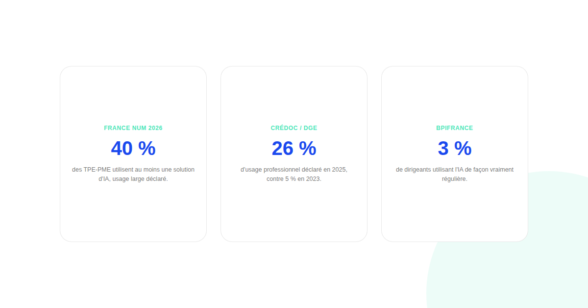
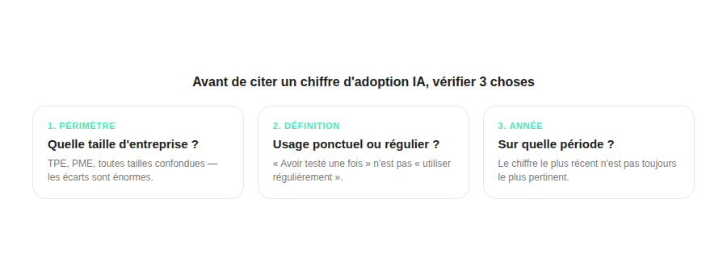

IA dans les PME françaises : pourquoi les chiffres d'adoption se contredisent autant
40 % des TPE-PME françaises utiliseraient l'IA, selon une étude. Seulement 3 % des dirigeants l'utiliseraient régulièrement, selon une autre. Les deux peuvent être vraies en même temps — ce qui compte, c'est de comprendre ce que chacune mesure réellement avant de choisir laquelle citer.

Difficile de trouver un sujet où les chiffres cités divergent autant que l'adoption de l'IA par les PME françaises. Entre 40 % et 3 %, l'écart donne l'impression que personne ne mesure la même chose — et c'est, pour l'essentiel, exactement ce qui se passe.
Les chiffres qui circulent, mis côte à côte
Une analyse du baromètre France Num 2026 situe à 40 % la part des TPE-PME françaises utilisant au moins une solution d'IA, en hausse de 14 points sur un an. Une étude du CRÉDOC pour la Direction générale des entreprises mesure, elle, une progression de 5 % en 2023 à 26 % en 2025 pour un usage professionnel déclaré. À l'autre extrême, une compilation citant des données Bpifrance ne situe qu'à 3 % la part des dirigeants utilisant l'IA de façon régulière, et 12 % de façon occasionnelle. Trois chiffres, trois ordres de grandeur très différents, sur un sujet présenté chaque fois comme « l'adoption de l'IA par les PME ».
Première explication : la définition de « utiliser l'IA » varie énormément
Un usage ponctuel et exploratoire (avoir testé ChatGPT une fois) n'a rien à voir avec un usage régulier intégré à un processus métier. Les études qui demandent « avez-vous déjà utilisé un outil d'IA » obtiennent logiquement des chiffres bien plus hauts que celles qui demandent « utilisez-vous l'IA de façon régulière dans votre activité » — ce qui explique une bonne partie de l'écart entre le chiffre Bpifrance (3 % réguliers) et les chiffres France Num ou CRÉDOC (usage déclaré plus large).

Deuxième explication : le périmètre d'entreprises interrogées diffère
Les études ne couvrent pas les mêmes entreprises : certaines portent sur l'ensemble des TPE-PME, d'autres isolent spécifiquement les très petites entreprises ou se concentrent sur une tranche de taille précise. Un article évoque ainsi un écart de 53 % contre 30 % entre PME et TPE au sein d'une même source — confirmant que la taille de l'entreprise reste l'un des facteurs les plus déterminants, quel que soit le chiffre global retenu par ailleurs.
Ce qui reste solide malgré ces écarts
Deux constats reviennent de façon cohérente dans toutes les sources consultées, malgré leurs écarts de niveau : la tendance est à la hausse d'une année sur l'autre, quelle que soit l'étude, et l'adoption progresse plus vite dans les PME structurées que dans les plus petites TPE. Ce sont ces deux constats directionnels, plutôt qu'un pourcentage isolé, qui méritent d'être retenus et cités.
Comment citer un chiffre sans se tromper
Avant de reprendre un pourcentage d'adoption IA dans une présentation ou un article, trois vérifications rapides évitent l'erreur la plus fréquente : quel périmètre d'entreprise est interrogé (TPE, PME, toutes tailles confondues), quelle définition de « utiliser l'IA » est posée dans la question, et sur quelle année porte la mesure. Le chiffre le plus récent n'est pas forcément le plus pertinent si son périmètre ne correspond pas à votre propos.
FAQ
Quel chiffre d'adoption de l'IA par les PME faut-il citer ?
Celui dont le périmètre correspond à votre question : une étude sur les entreprises de 20 salariés et plus ne dit rien d'utile sur une TPE de 5 personnes, et l'écart entre adoption occasionnelle et usage régulier change radicalement le chiffre final. Toujours vérifier le périmètre et la définition avant de citer un pourcentage.
Pourquoi un même institut peut-il publier des chiffres très différents d'une étude à l'autre ?
Parce que la définition de « utiliser l'IA » varie énormément : un usage ponctuel et exploratoire n'est pas la même chose qu'un usage régulier intégré aux processus métier. Deux enquêtes du même institut, posant une question légèrement différente ou interrogeant une tranche d'entreprise différente, produisent des résultats difficilement comparables.
L'écart d'adoption entre TPE et PME françaises est-il confirmé par plusieurs sources ?
Oui, c'est le point le plus constant entre les différentes études malgré leurs écarts de niveau absolu : la taille de l'entreprise reste le facteur le plus associé à l'adoption, les plus petites structures adoptant systématiquement moins vite que les PME plus structurées.
Envie d'un accompagnement IA adapté à la taille réelle de votre structure ?
Pour aller plus loin, voir le Baromètre IA & Growth Marketing, et l'article Growth marketing IA pour petites équipes.
Pour continuer sur ce sujet.